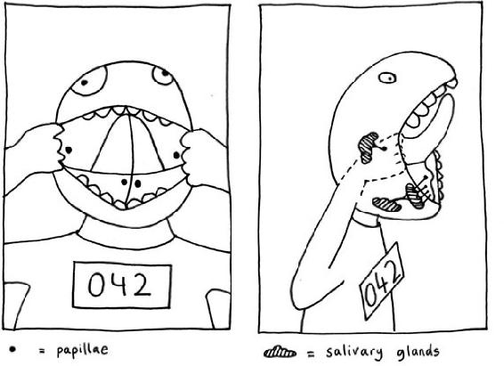

YOU MIGHT THINK that the back end of the gut has so many surprises in store for us because it is something we do not think about very much. But I don’t think that’s the real reason. The other end of the gut, the gateway, so to speak, also has no shortage of surprises in store—even though we are directly confronted with it every morning when we clean our teeth.
You can seek out these secrets with your tongue. These are four small points in your mouth. Two of them are located on the inside of your cheeks, opposite your upper molars, more or less in the middle. If you explore the area with your tongue, you will feel two tiny bumps. If they notice them at all, most people assume they must have bitten themselves in the cheek at some point, but they haven’t. These little nubs, which doctors call the parotid papillae, are found in the same position in everybody’s mouth. The other two points are lurking beneath your tongue, just to the right and left of the lingual frenulum, the fold of skin connecting your tongue to the floor of your mouth. These four little nubs supply your mouth with saliva.
The papillae in your cheeks secrete saliva whenever it’s needed right away—for example, when we eat. The two tiny openings under the tongue secrete saliva continuously. If you could somehow enter these channels and swim against the tide of saliva, you would eventually reach the main salivary glands. They produce the most saliva—about 11/2 to 2 US pints (0.7 to 1 liter) a day. If you feel upward from your neck to your cheek, you will notice two soft, round raised areas. May I introduce you? They are the bosses.

THE SUBLINGUAL PAPILLAE, those two constant suppliers of saliva, are situated right behind our lower front teeth, which are particularly susceptible to the buildup of tartar. This is because there are substances in our saliva that contain calcium whose sole function it is to make our teeth harder. But if a tooth is constantly bombarded with calcium, it can be a case of too much of a good thing. Tiny molecules floating innocently by are caught up and “fossilized” without so much as a by-your-leave. The problem is not the tartar itself, but the fact that it has such a rough surface, affording a much better foothold for bacteria that cause tooth decay and gum disease than smooth, clean tooth enamel.
But what are fossilizing, calcium-containing substances doing in our saliva? Saliva is basically filtered blood. The salivary glands sieve the blood, keeping back the red blood cells, which are needed in our arteries, not in our mouth. But calcium, hormones, and some products of our immune system enter the saliva from the blood. That explains why each person’s saliva is slightly different. In fact, saliva analysis can be used to test for diseases of the immune system or for certain hormones. The salivary glands can also add extra substances, including those calcium-containing compounds, and even natural painkillers.
Our saliva contains one painkiller that is stronger than morphine. It is called opiorphin and was only discovered in 2006. Of course, we produce only small amounts of this compound, otherwise we would be spaced out on our own spit all the time! But even a small amount has a noticeable effect, since our mouth is such a sensitive thing. It contains more nerve endings than almost anywhere else in the human body. Even the tiniest strawberry seed can drive us crazy if it gets stuck somewhere. We feel every grain of sand in a badly washed salad. A teeny little sore, which we would not even notice if it were on our elbow, hurts like hell and feels monstrously big in our mouth—without our salivary painkiller, it would feel even worse!
When we chew, we produce more saliva and with it more of such analgesic substances, which explains why a sore throat often feels better after a meal and even minor sores in the oral cavity hurt less. It doesn’t have to be a meal—even chewing gum provides us with a dose of our oral anodyne. There are even a handful of new studies showing that opiorphin has antidepressant properties. Is our spit partly responsible for the reassuring effects of comfort eating? Medical research into both pain and depression may deliver the answers in the next few years.
Saliva protects the oral cavity not only from too much pain, but also from too many bad bacteria. That’s the job of mucins, for example. Mucins are proteins that form the main constituent of mucus. They help provide hours of fascination and fun for young children who have just found out they can blow bubbles with their own spit. A more useful function is their ability to envelop our teeth and gums in a protective mucin net. We shoot them out of our salivary papillae like Spider-Man shoots webs from his wrists. These microscopic nets can catch bacteria before they have a chance to harm us. While the bad bacteria are caught in the net, antibacterial substances in our saliva can kill them off.
Like the natural painkillers in our saliva, bactericidal substances are present in our saliva in small concentrations. Our spit is not supposed to disinfect us completely. In fact, we actually need a core team of good little creatures in our mouth. Benign bacteria in the mouth are not totally wiped out by our disinfectant saliva since they take up space—space that could otherwise be populated by more dangerous germs.
When we are asleep, we produce very little saliva. That’s good news for those who tend to drool into their pillow. If they produced the full daytime quota of 2 to 3 US pints (1 to 1.5 liters) during the night, too, the results would not be particularly pleasant. The fact that we produce so little saliva at night explains why many people have bad breath or a sore throat in the morning. Eight hours of scarce salivation means one thing for the microbes in our mouth—party time! Brazen bacteria are no longer kept in check, and the mucus membranes in our mouth and throat miss their sprinkler system.
That is why brushing your teeth before you go to bed at night and after you get up in the morning is such a clever idea. Brushing at bedtime reduces the number of bacteria in your mouth, leaving fewer partygoers for the all-night bash. Brushing in the morning is like cleaning up after the party the night before. Luckily, our salivary glands wake up at the same time we do in the morning and start production straight away. Munching on our first piece of toast or performing our morning dental hygiene duties adds extra stimulation for salivation, and this washes away the nocturnal microbes or transports them down into our stomach, where our gastric juices finish them off.
Those who suffer from bad breath during the day may have not managed to remove enough musty-smelling bacteria. Those cunning little critters love to hide out under the newly formed mucin net, where the antibacterial substances in our saliva cannot get to them. A tongue scraper can help here, but so can chewing gum, which helps stimulate saliva production to swill out those mucin hideouts. If none of this helps, there is another place where the causes of bad breath can lurk—but more of that later, after we have found out about the second secret place in our mouth.
This place is one of those typical surprises—like when you think you know someone, only to find out they have an unexpected crazy side to them. The well-coiffed secretary from Chicago who turns up on the Internet as a fanatical ferret breeder. The heavy-metal guitarist seen buying skeins of yarn because he finds knitting so relaxing and it’s such a good workout for the fingers. The best surprises come after first impressions have been made, and the same is true of your own tongue. When you look in the mirror and stick out your tongue, you are not seeing it in all its glory. You might well ask how it looks farther down, as you can clearly see that it does not just end at the back of your mouth. In fact, the root of the tongue is where things start to get really interesting.
The root of the tongue is home to an alien landscape of pink domes. Those whose gag reflex is not too pronounced can carefully feel the root of their tongue with a finger. When you reach the root, you will notice it gets pretty bumpy back there. The job of these nodules—doctors call them your lingual tonsils—is to investigate everything we swallow. To do this, they pick up tiny particles of anything we eat, drink, or inhale and draw them into the nodule. Inside, an army of immune cells waits to receive training in how to deal with foreign substances invading from the outside world. They need to learn to leave bits of apple in peace, while attacking anything that might give us a sore throat. So, if you do explore the root of your tongue with your finger, it is not clear who is explorer and who the explored. After all, this area includes some of the most inquisitive tissue in our body—immune tissue.
The immune tissue has a number of such inquisitive hotspots. Strictly speaking, a ring of immune tissue encircles our entire throat. Known to scientists as Waldeyer’s tonsillar ring, it includes those lingual tonsils at the bottom of the circle; the palatine tonsils—these are the ones we generally think of as our tonsils—at either side; and at the top of the ring, where the ear, nose, and throat areas meet, there is more such tissue. (When swollen and infected, especially in children, this is what we know as adenoids.) Those who believe they have no tonsils left are not quite correct. The entire collection of tissue in Waldeyer’s ring makes up our tonsils. Whether they are located at the root of the tongue, at the back of the mouth, or at the side of our throat, all these areas of tonsillar tissue do the same job: they inquisitively investigate any foreign substance they encounter and use the information to train the immune system to defend us.
The tonsils—the ones we often have removed—are just not as clever in the way they go about this task. Rather than forming bumps, they tend to form deep grooves (to increase surface area) known rather spookily as “crypts.” Sometimes, too much foreign material can get caught in the crypts, leading to frequent infections. This is a side effect, so to speak, of having overinquisitive tonsils. So, if the tongue and teeth have been excluded as a cause of a patient’s bad breath, the next place to check is the tonsils—if they are still there.
Sometimes, little white stones can be found hiding in the crypts, and these stones smell terrible! Often, people have no idea they are there, and they spend weeks trying unsuccessfully to get rid of bad breath or a strange taste in their mouth. No amount of tooth brushing, tongue scraping, or gargling helps. The little stones will eventually work their way out of their hiding places, with no permanent harm done. But you can also take fate into your own hands and, with a little practice, squeeze them out. That done, bad breath problems disappear instantaneously.
The best test to find out whether smelly breath is caused by these little deposits is simply to run a finger or a cotton bud over the tonsils and then sniff it. If it smells unpleasant, it is time to go hunting for tonsil stones. Ear, nose, and throat doctors can also remove them, which is the safer and more convenient option. Those with a strong stomach and a love of barely watchable videos can visit YouTube to see various techniques for squeezing tonsil stones out and view some extreme examples. But be warned! These videos are not for the fainthearted.
There are also other household remedies for tonsil stones. Some people gargle with salt water several times a day; others swear by fresh, raw sauerkraut from the health-food store; and yet others claim cutting out dairy products will prevent them from forming. There is no scientific basis for any of these remedies. A more thoroughly researched medical question is that of when a tonsillectomy can or should be carried out. The answer turns out to be—not before the age of seven.
Seven is the age by which we have probably seen it all, or all that is important for our immune cells: being born into a completely unfamiliar world; being kissed and cuddled by Mom; playing in the garden or the woods; touching animals; having many colds in quick succession; meeting a load of new people at school. And that’s about it. By this time, our immune system has finished its schooling, so to speak, and can go to work for us for the rest of our life.
Before we reach the age of seven, our tonsils are still an important training camp for our immune cells. Building a healthy immune system is not only important for warding off colds, it also has an important part to play in keeping our heart healthy and in controlling our body weight. For example, removing the tonsils of a child younger than seven can lead to an increased risk of obesity. Why this should be the case is something doctors have not yet discovered. However, more and more researchers are now becoming interested in the link between the immune system and body weight. This tonsil-tubbiness effect can be a boon for underweight children because the associated weight gain can propel them into the normal weight range, but for all other children, parents are best advised to make sure their child eats a healthy, balanced diet after a tonsillectomy.
So the tonsils of children below the age of seven should stay in, unless there is a very good reason for taking them out. If the tonsils are so large that they impede normal breathing or sleeping, for example, the tonsil-tubbiness effect is secondary. It may seem sweet of our immune tissue to want to defend us so loyally, but in such cases, it does more harm than good. Often, doctors can use lasers to remove only that part of the tonsils that is causing the trouble. They no longer have to leave patients completely tonsil-less. Chronic or repeated infections are a different story altogether. In such cases, our immune cells are kept constantly busy, with no time for a bit of R&R, and that is not good for them if it continues for too long. Whether we are four, seven, or fifty years old, an oversensitive immune system can benefit from saying goodbye to those tonsils.
One example of those who benefit from having their tonsils removed is psoriasis sufferers. In psoriasis, an overreaction of the immune system causes itchy skin lesions—often starting at the head—and painful inflammation of the joints. Psoriasis patients also have an above-average vulnerability to sore throats. One possible factor in this is bacteria, which can hide in the tonsils for long periods of time and needle the immune system from there. For more than thirty years, doctors have described cases of psoriasis patients whose skin condition improved or cleared up entirely following a tonsillectomy. In 2012, this prompted researchers from Iceland and the United States to investigate the phenomenon more closely. They split twenty-nine psoriasis patients who also suffered frequent sore throats into two groups. One group had their tonsils surgically removed, the other didn’t. Thirteen of the fifteen “detonsilized” patients reported a significant long-term improvement in their skin. Those still in possession of their tonsils reported little or no change. Some sufferers of rheumatic diseases are also now advised to have their tonsils removed if they are suspected of being part of the cause of the condition.
Tonsils in or tonsils out? There are good arguments for both. Those forced to bid farewell to their tonsils at an early age need not worry that their immune system has missed an important lesson from the oral cavity. Luckily, there is still all the rest of the tissue at the base of the tongue and back of the throat. And those whose tonsils are still in place need not worry that they have been left with nothing but a trap for bacteria. Many people’s tonsillar crypts are quite shallow and so are less likely to cause problems for their owners. The other parts of Waldeyer’s ring are actually very bad at providing a refuge for bacteria: they are constructed differently and have glands to help them clean themselves regularly.
There is something happening every second in our mouth: salivary papillae shoot out nets of mucin, take care of our teeth, and protect us from the effects of oversensitivity. Our tonsillar ring keeps watch for foreign particles and uses them to train its immune army. But we would need none of this if the story didn’t continue beyond our mouth. The mouth is simply the gateway to a world where the external becomes internalized.